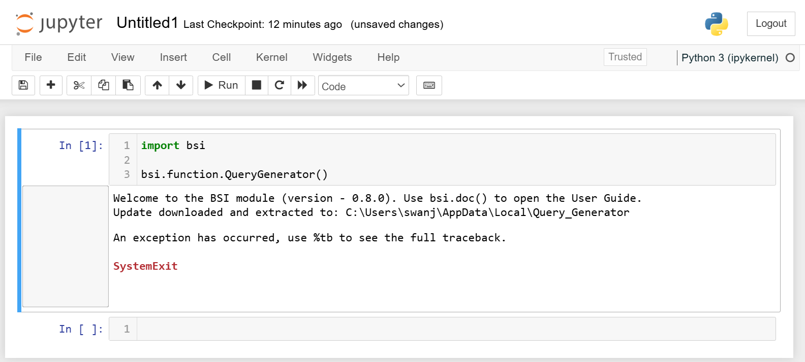

1.3.1
How to install your Query Generator program
Developed by Josh Swan
Query Generator is moving to automatic updates so you will never need to manually update it ever again.
To get the latest app, you will need to install via BSI module as a one-off.
- Ensure your BSI module is up to date using the update button in your BSI manager folder on your desktop.
- Open your Jupyter Notebook and type the following:
import bsi
bsi.function.QueryGenerator()

Ignore the 'An exception has occurred...' error. There is no error, it's just how Jupyter interprets a close command I wrote.
- Query Generator should have opened automatically and is installed at "C:\Users\<username>\AppData\Local\Query_Generator\Query_Generator". Navigate here to create a shortcut for Query Generator.